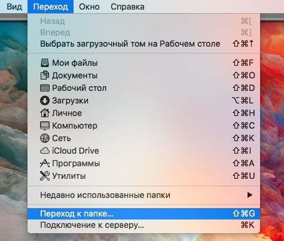

Установка и удаление
кекстов в macOS
§Введение
Слово «Кекст» — транскрипция английского сокращения Kext от Kernel extension, т.е. расширение ядра. В виде кекстов реализованы все драйверы для macOS. Большинство самих же кекстов реализовано в виде специальных установочных пакетов, при запуске которых потребуется лишь ввести пароль, а всё остальное сделают за вас скрипты. Почти так же, как и с привычной установкой драйверов на ОС Windows.
Но не всегда всё так легко. Порой достается просто файл с расширением .kext. А в случае с хакинтошем, следует и вовсе готовиться к тому, что, возможно, придётся перепробовать несколько разных кекстов, прежде чем определенная аппаратная часть ПК заработает правильно.
Установка кекстов в macOS состоит из трёх этапов:
- Копировании в папку System/Library/Extensions.
- Настройке прав доступа.
- Удалении и пересоздании кэша кекстов для загрузки системы.
§Установка кекстов
Kext Utility
Есть два способа установки кекстов — ручной и автоматический. Я рекомендую автоматический, поскольку он гораздо проще. В этом мне помогает отличная программа Kext Utility. Она делает за меня все три описанных выше этапа установки кекстов.
Есть несколько способов работы с Kext Utility:
- перетаскивание одного или нескольких кекстов в окно программы;
- запуск вхолостую, запускающий проверку прав доступа к уже установленным кекстам и пересозданию их кэша.
- Скачайте Kext Utility с cvad-mac.narod.ru и установите, переместив приложение в папку «Программы».

- При каждом открытии программы начинается служебная процедура. Пока она выполняются, крутится индикатор и выводится лог событий.
- Переместите кекст(ы) в окно программы методом drag-and-drop и дождитесь выполнения установки.
- Как только появится кнопка Quit, кекст(ы) будут установлены.
- Выйдите из программы и перезагрузите компьютер. После перезагрузки все устройства, для которых были установлены кексты, должны опознаться системой.


Установка в папку Clover
Не всегда требуется устанавливать кексты в системную папку macOS: на хакинтоше есть еще одно место с кекстами — в папке Clover. Обычно там располагаются кексты, необходимые для работы хакинтоша. Выбор места для установки следует делать исходя из документации к кексту. Большое количество кекстов, загружаемых через Clover, может замедлить загрузку системы.
- Откройте папку кекстов в Clover: EFI > CLOVER > Kexts > Other.
- Скопируйте туда необходимые кексты и перезагрузите компьютер.
В папке Clover/Kexts/Other располагаются кексты для всех версий macOS. Рекомендуется копировать кексты именно в эту папку.

§Удаление кекстов
Удаление из системной папки
- Выберите в строке меню пункт «Переход к папке» и введите путь к системной папке: /System/Library/Extensions

С помощью сочетания ⌘ + Shift + . (точка) можно отображать скрытые файлы в macOS и таким же способом их скрывать.
- Затем найдите кекст у удалите.
- После запустите Kext Utility и подождите окончания процедуры по пересозданию кеша.
- Перезагрузите компьютер.
Помимо основной папки с кекстами в macOS, которая располагается в папке System/, есть еще одно место, где хранятся кексты — /Library/Extensions. Но оно используется гораздо реже и кекстов там немного.

Удаление из папки Clover
В случае, если целевой кекст располагается в папке Clover, просто удалите его оттуда и перезагрузите компьютер.